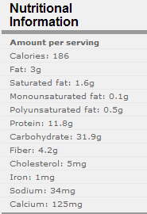
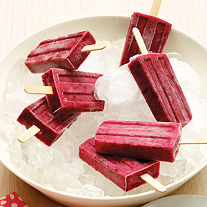
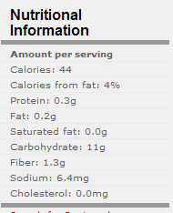

|
Blueberry-Orange Parfaits |
|
|
Ingredients
1 1/2 tablespoons natural sugar (Brown)
1/2 teaspoon grated orange rind
1/2
containers
yogurt
2
cups fresh blueberries
2
cups orange sections (about 2 large
)
1/4 cup wheat germ
Preparation
|
 |
| Yield: 4 servings (serving size: 1 parfait) | |
|
Triple-Berry Popsicles |
|
|  | |
|
Ingredients
2/3 cup sugar (see Notes)
1 cup blueberries
1 cup strawberries, hulled and sliced
1 cup raspberries
1/4 cup fresh lemon juice Preparation
1. Put sugar and 1/3 cup water in a small saucepan and bring to boil
over high heat, stirring until sugar is dissolved. Set aside.
2. Combine blueberries, strawberries, raspberries, and lemon juice
in a blender and purée until smooth, about 30 seconds. Add 1/3 cup
simple syrup and blend just until combined. (Save remaining syrup
for another use, such as sweetening iced tea.)
|
 |
| Yield: Makes 10 popsicles . (serving size: 1 popsicle) | |
|
Banana-Mango
Smoothie |
|
|
Ingredients 1 cup cubed peeled ripe mango 3/4 cup sliced ripe banana (about 1 medium) 3/4 cup fat-free milk 1 tablespoon nonfat dry milk (optional) 1teaspoon honey 1/4 teaspoon vanilla extract
Preparation
|
 |
| Yield: 2 servings (serving size: 1 cup) | |